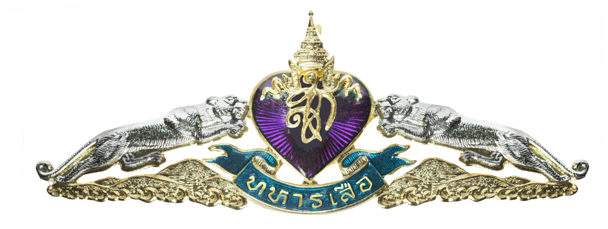
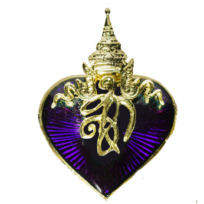
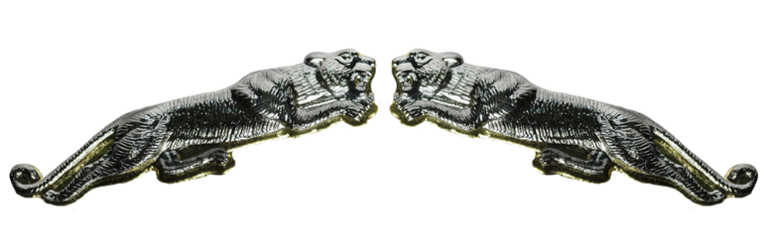
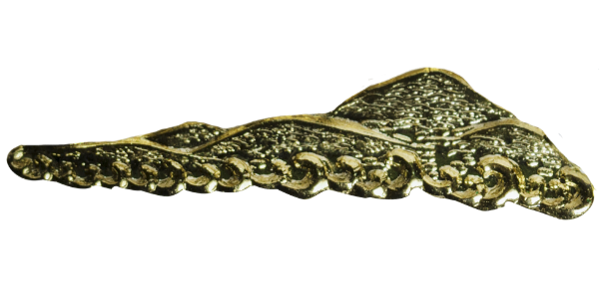
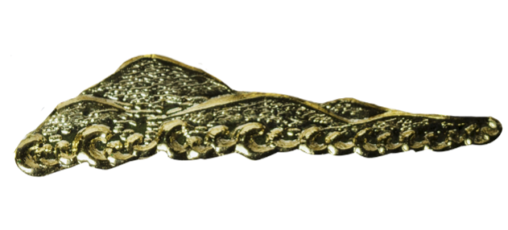

Queen's Tiger Training Course
คลิกที่แต่ละภาคเพื่อดูรายละเอียดเพิ่มเติม
เมื่อจบการฝึกแล้วกำลังพลที่สำเร็จการฝึกหลักสูตรทหารเสือทุกนาย จะได้พระราชทานเครื่องหมายแสดงขีดความสามารถทหารเสือจาก พระบาทสมเด็จพระบรมชนกาธิเบศร มหาภูมิพลอดุลยเดชมหาราช บรมนาถบพิตร สมเด็จพระนางเจ้าสิริกิติ์ พระบรมราชินีนาถ พระบรมราชชนนีพันปีหลวง องค์ผู้บังคับการพิเศษ กรมทหารราบที่ ๒๑ รักษาพระองค์ฯ พระบาทสมเด็จพระปรเมนทรรามาธิบดีศรีสินทรมหาวชิราลงกรณ พระวชิรเกล้าเจ้าอยู่หัว และ สมเด็จพระกนิษฐาธิราชเจ้า กรมสมเด็จพระเทพรัตนราชสุดาฯ สยามบรมราชกุมารี
นอกจากนี้เพื่อให้กำลังพลที่ผ่านการฝึกแล้ว ได้มีโอกาสทบทวนและฝึกฝนในขั้นก้าวหน้า อย่างต่อเนื่อง กรมทหารราบที่ ๒๑ รักษาพระองค์ ฯ จึงได้รวบรวมวิชาที่เป็นวิชาหลักในหลักสูตรทหารเสือ มาจัดตั้งเป็นชมรมยุทธกีฬา เพื่อให้กำลังพลทหารเสือ ได้มีการฝึกฝนอีก ๗ ชมรม คือ

เครื่องหมายเชิดชูเกียรติทหารเสือ เป็นเครื่องหมายทำด้วยโลหะ ประดับหน้าอก เสื้อชุดปกติ และเป็นเครื่องหมายปักด้วยไหมสีดำ ประดับที่หน้าอกเสื้อชุดฝึก เบื้องขวาของทหารเสือทุกนาย คือเครื่องหมายที่ได้รับพระราชทานจากสมเด็จพระนางเจ้าสิริกิติ์ พระบรมราชินีนาถ พระบรมราชชนนีพันปีหลวง ทรงพระราชทานพระราชดำริ ให้มีการฝึกในหลักสูตรทหารเสือนี้ ซึ่งความหมายของเครื่องหมายเชิดชูเกียรติมี ดังนี้.-

สมเด็จพระนางเจ้าสิริกิติ์ พระบรมราชินีนาถ พระบรมราชชนนีพันปีหลวง ทรงมีพระราชดำรัส “หัวใจสีม่วง” หมายถึงผู้บริสุทธิ์ ผู้มีความซื่อสัตย์ สุจริต และจริงใจเป็นที่ตั้ง ทั้งนี้เพราะผู้ที่ใกล้ตายหัวใจจะกลายจากสีแดงเป็นสีม่วง และในห้วงเวลานั้น บุคคลผู้นั้นจะไม่มีการพูดปดโกหกหรือปิดบังสิ่งใดๆ
ซึ่งหัวใจสีม่วงได้ทรงพระราชทานแก่กำลังพลในกรมทหารราบที่ ๒๑ รักษาพระองค์ ฯ ทุกนาย ด้วยทรงมุ่งหวังให้กำลังพลทหารเสือทุกนาย เป็นผู้มีความซื่อสัตย์ สุจริต และจงรักภักดีต่อชาติ ศาสนา และพระมหากษัตริย์ ส่วนพระนามาภิไธยย่อ “ สก ” หมายถึง สมเด็จพระนางเจ้าสิริกิติ์ พระบรมราชินีนาถ พระบรมราชชนนีพันปีหลวง องค์ผู้พระราชทานกำเนิดทหารเสือ

หมายถึง กำลังพลทหารเสือทุกนาย ที่เทิดทูนความซื่อสัตย์ สุจริต และจงรักภักดีแทบเบื้องยุคลบาท องค์พระมหากษัตริย์ และราชวงศ์ด้วยความจริงใจ


หมายถึง ทุกหนทุกแห่ง ไม่ว่าจะเป็น บนฟ้า พื้นดิน ภูเขา หรือในทะเล ทหารเสือทุกนาย พร้อมที่จะดั้นด้นไป เพื่อรักษาไว้ซึ่งความปลอดภัยของชาติ และองค์พระมหากษัตริย์ เหล่าทหารเสือมีความพร้อมและสามารถปฏิบัติภารกิจได้ทุกพื้นที่ ทุกภูมิประเทศ และทุกรูปแบบ ไม่ว่าจะเป็นในเมือง ที่ราบ ป่าภูเขา บนท้องฟ้า และในทะเล
เครื่องหมายทหารเสือชนิดโลหะ ใช้ประดับที่อกเสื้อเบื้องขวากับชุดเครื่องแบบ ชุดปกติ
เครื่องหมายปักด้วยไหมสีดำ ใช้ประดับที่อกเสื้อเบื้องขวาเครื่องแบบชุดฝึก และ เครื่องหมายทหารเสือทั้งสองชนิดนี้ จะต้องประดับรองจากพระปรมาภิไธยย่อ หรือพระนามาภิไธยย่อ เท่านั้น และจะต้องประดับ เหนือเครื่องหมายอื่นๆ ทุกชนิด